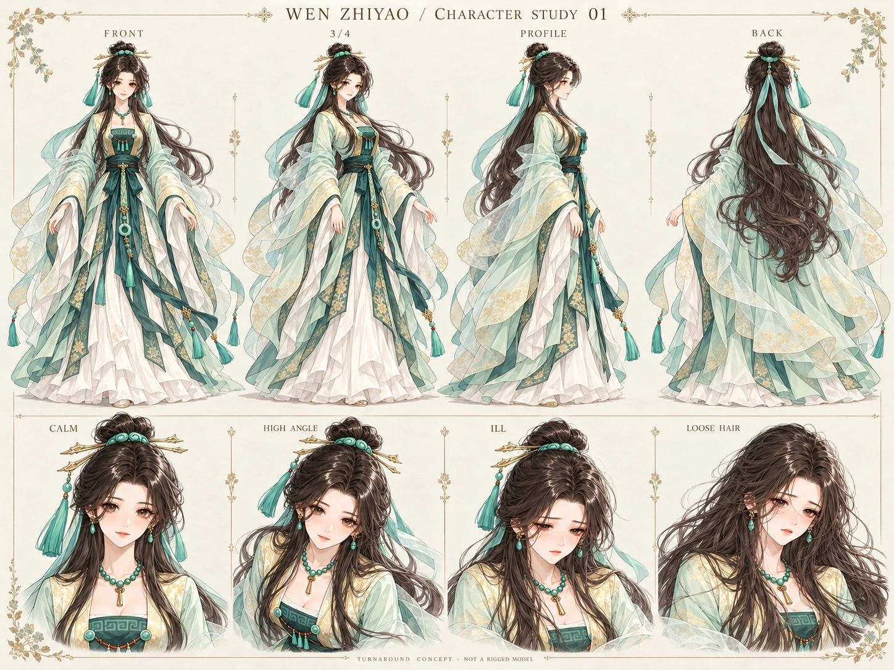

三维场景未启动，当前为原静态画面。
白日 · 窗光1 m 为一单位 / 实时渲染
01 / SPACE
空间全景
正在搭起房间…
观察位置
窗外时辰
空间关系
日常行动
屏风已缩窄并靠右；挡住人物的前景会暂时淡化，离开遮挡后恢复。新增木纹、织物、家具圆角与生活陈设，仍使用功能占位角色。
人物为无面容的体积代理，仅验证比例、床面接触、路径与遮挡；步态和姿势切换均不是正式人物演出。
本轮看什么
从一幅画，到一个房间。
换机位时留意床柱与屏风的前后关系。入场时，代理沿门边绕过屏风；切到夜间，再关灯，观察桌面和地板附近的受光变化。
真实摄像机几何深度遮挡局部灯光投影同一房间的四种时辰
WEN ZHIYAO / CHARACTER STUDY 01
让房间里的她，仍然是她。
原立绘是人物依据。新转面图用于建模校准，尚待确认；三维场景中仍为体积代理。
她现在不在寝居。
人物状态尚未读取。

模型制作进度
已完成：原图依据整理、转面设定候选、人物与 CG 共用状态接口。待完成：符合原画的可编辑角色模型、骨骼、表情及自然动作；当前不以无脸代理替代正式人物。
三维人物上线前仍需检查：是不是温知遥、是否脚底着地、是否穿床穿衣、病中是否按规则休息。此次未进行浏览器与手机视觉实测。
试验条件与性能记录
等待第一帧。
FPS 为本浏览器实测；GPU 内存不可直接获取。导出 JSON 不会被当作录屏或 iPhone 验收。